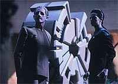
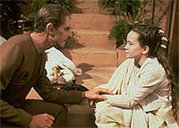
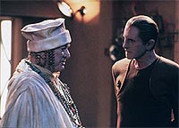
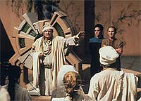
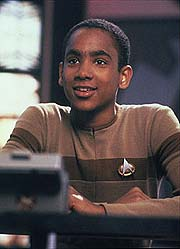

MANCHETE
DO EPISDIO
Roteiro
d lio de continuidade, com
histrias simples, mas eficientes
Episdio
anterior | Prximo
episdio
Sinopse:
Data Estelar: 47603.3.
Dax embarca em uma misso de
pesquisa ao quadrante Gama, juntamente com Odo, que espera
encontrar alguma pista sobre o seu povo. Os dois acabam por
encontrar a presena de partculas micron (de ocorrncia
muita rara na natureza e que interferem com os sensores do
Explorador) em um planeta. Se transportando a superfcie do
planeta eles encontram a fonte de tais partculas, o reator de
uma pequena comunidade localizada em um vale.
Os dois se entrosam com o oficial da lei local (Colyus) e decidem
ajud-lo a investigar o recente desaparecimento de 22 pessoas
daquele vilarejo. A ltima vtima foi a filha do lder da
comunidade (de nome Rurigan) e me da pequena Taya.

Odo
d procedimento investigao entrevistando Taya (a amizade
entre dois permeia toda esta histria) e no consegue obter
muita informao a no ser a de que aparentemente nenhum
morador nunca deixou o vale, o que deixa o comissrio muito
intrigado.
Odo, Dax e Taya visitam uma das fronteiras do vale. Quando o brao
de Taya atravessa o permetro, ele desaparece at o cotovelo.
Quando ela "puxa" o brao de volta para o interior do
permetro, ele reaparece. Dax chega concluso de que todo o
vilarejo, incluindo os seus habitantes, so hologramas gerados
pela pea de tecnologia que ela confundiu com o reator local. O
sistema est se degradando, o que explica o desaparecimento dos
outros moradores. Ela sugere um desligamento do sistema, certos
reparos e uma reinicializao completa para resolver o problema.
A populao local, apesar do compreensvel choque inicial,
acaba concordando.
Quando Dax desliga o holoprojetor tudo desaparece, menos Rurigan.
Ele acaba confessando que aps o Dominion destruir o modo de vida
do seu planeta natal, ele resolveu se transferir para este planeta
e construir um mundo para ele. Aps alguma relutncia por parte
de Rurigan sobre a realidade da vida que levou ali por 30 anos,
Odo acaba o convencendo a ficar. Rurigan pede que a sua real histria
no seja contada aos demais, no que Odo e Dax concordam.
O plano de Dax funciona e os moradores desaparecidos retornam,
incluindo a me de Taya. Antes de partir, Odo se transforma em um
pio, s para agradar Taya.
Paralelamente, na estao, Kira avisa Quark que no vai tolerar
nenhuma atividade criminosa dele enquanto Odo estiver fora e tambm
informa que um primo do Ferengi (suspeito de um recente roubo a um
museu Cardassiano) teve sua entrada impedida na estao.

Logo
em seguida, Vedek Bareil chega estao para ver Kira, os dois
vo jogar "springball" e aps o jantar, nos aposentos
de Kira, acabam se beijando. Nesse momento acaba por surgir o
assunto sobre o homem que convidou Bareil a estao, Prylar
Rhit, o qual Bareil diz que deve dinheiro a Quark.
Somando dois mais dois, Kira parte apressada para falar com Prylar
Rhit e confirmar a trama de Quark. Ao final da histria ela vem
agradecer Quark por ter proporcionado a ela a companhia de Bareil
e tambm informar ao Ferengi que o primo dele acaba de ser preso,
tentando entrar na estao com o produto do seu roubo do museu
Cardassiano.
Enquanto Kira se via s voltas com Quark e Bareil, Ben Sisko
decide que Jake deve arrumar um trabalho e arranja para que seu
filho seja assistente de O'Brien. Ben diz que alguma experincia
em engenharia teria uma bom impacto em uma possvel admisso de
Jake na Academia da Frota Estelar. Conversando com O'Brien, Jake
acaba "soltando" que no quer entrar na Academia, mas
tem medo de falar com Ben por medo de que possa magoar o seu pai.
O'Brien o encoraja a contar a verdade. Jake se abre com Ben e o
comandante diz que qualquer caminho que o seu filho escolher na
vida, ele estar sempre ao lado dele.
Comentrios:
Um belo trabalho de continuidade e uma grande conscincia sobre
as suas prprias limitaes nos do um episdio vencedor.
Saiba mais sobre o que faz de "Shadowplay" um
campeo nos cantos sombrios dos comentrios abaixo.

O
formato do episdio razoavelmente conhecido para quem
acompanha drama televisivo em geral. Uma histria principal (que
pode e deve desenvolver os personagens no processo) que
devidamente concluda no curso do episdio e duas (ou mais histrias)
que esto associadas s contnuas histrias pessoais dos
demais personagens e que alm de possurem tramas essencialmente
minimalistas, so normalmente deixadas em aberto ao final do episdio.
A histria principal, a do "vilarejo hologrfico", foi
razoavelmente previsvel e a maioria dos espectadores deve ter
suspeitado que a comunidade era hologrfica e que Rurigan era o
nico no-holograma, antes at de Odo e Dax.
Felizmente tambm no tivemos nenhum "suspense forado"
sobre se o plano de Dax iria funcionar ou no. O que conduz essa
histria so as grandes atuaes e a sinceridade das
caracterizaes dos personagens. O destaque especial do episdio
como um todo foi sem dvida o relacionamento entre Odo e Taya.
Desde o paralelo existente pelo fato de ambos estarem procurando
por seus pais, at a aceitao de Odo por parte de Taya no
curso do episdio ( tambm muito interessante a discusso
entre os dois do porqu de tal aceitao no ocorrer sempre).
Todas as cenas entre eles ressonam verdadeiras, dando esperana a
Odo de continuar a sua busca pessoal.
Todo elemento de caracterizao de Odo que poderia ser
aproveitado em seu relacionamento com Taya foi trazido ao dilogo,
um verdadeiro presente aos fs do personagem.
(Foi tambm importante --e decisiva para a permanncia de
Rurigan-- a questo levantada por Odo sobre o fato de Taya ser
mais jovem do que o programa original, e da ser talvez uma nova
forma independente de vida.)

Quanto
primeira histria secundria, envolvendo Quark, Kira e
Bareil, temos vrios problemas. O menor deles sobre o ponto de
continuidade em relao aos eventos de "Invasive
Procedures" (tambm escrito por Wolfe). Aqui Kira no
deixa dvidas de que, por vontade dela, Quark j teria sido
jogado pela escotilha de ar mais prxima, mas tal comportamento no
foi visto de l para c. O que faz falta tambm uma referncia
direta, nos dilogos, aos eventos de "Invasive
Procedures".
No restante, temos finalmente o que foi sugerido em "The
Circle": Kira e Bareil ficam juntos. O grande
problema aqui que o relacionamento como sugerido pela viso do
Orb parecia ter implicaes picas e nobres, com propsitos
importantes, o que est longe do que foi apresentado aqui.
Simplesmente Bareil aparece na estao est a fim da Kira e as
coisas acontecem, a falta de um simbolismo maior (e por que no,
mais verniz) nesta histria frustrante. A caracterizao
claudicante de Bareil (se soltando um pouco mais do que vinha
fazendo anteriormente) e a superatividade de Kira no ajudam em
nada. De qualquer forma os dois esto juntos agora, e temos que
viver com isto.

Sobre
a segunda histria secundria, envolvendo Ben, Jake e O'Brien,
temos mais alguns detalhes do passado de O'Brien e a resoluo
do "setup" feito no episdio anterior ("Paradise")
em relao a Jake. O nico problema com esta parte da histria
que Ben aceita (um pouco) fcil demais a opo de Jake. A
concluso dessa histria deveria ficar um pouco mais em aberto.
A direo de Robert Scheerer foi extremamente competente quanto
histria principal (a equipe de efeitos visuais tambm fez um
bom trabalho), regular quanto histria de Jake e fraca quanto
a histria de Bareil e Kira.
O mestre Auberjonois deu mais uma aula de representao com
maquiagem, fazendo o lado mais suave de Odo emergir quase que por
mgica. Os demais regulares honraram o pagamento (apesar de achar
que Nana Visitor deva maneirar na cafena no prximo episdio).
Kenneth Mars se saiu muito bem em colocar no seu Colyus um certo
senso de impotncia, frustrao e relaxamento, bastante simptico,
sem dvida. Kenneth Tobey se saiu muito bem em papel ainda mais
difcil, o discurso do personagem quando Dax desliga o projetor
bastante tocante. Noley Thorton (a nica coisa boa do horrvel
episdio "Imaginary Friend" da quinta temporada
da Nova Gerao) fez mais um belo trabalho como Taya,
apresentando as emoes da personagem de forma correta, sem
exageros. Infelizmente o "queixo duro" de Philip Anglim
no ajudou muito a trama envolvendo Bareil e Kira.
O papo de Bashir sobre Garak estar ensinando a ele sobre "tcnicas
de vigilncia" foi um bom ponto de continuidade para o
relacionamento dos dois. Por outro lado, o fato de Odo se referir
(facilmente) a Kira como uma amiga deixa uma grande decepo
sobre alguma possvel repercusso sobre os acontecimentos de "Necessary
Evil".
"Shadowplay" acaba por funcionar, no por trazer
uma histria muito inspirada ou muito original, mas sim por
tratar das conseqncias dos acontecimentos (relacionados aos
personagens) que vieram antes, no curso da srie, e oferecer
novos caminhos a estes personagens.
Citaes
Dax - "After seven
lifetimes, the impersonal questions aren't much fun any
more."
("Aps sete vidas, as questes impessoais j no so
mais divertidas.")
Dax - "Are we being accused of some kind of crime?"
("Estamos sendo acusados de algum tipo de crime?")
Colyus - "Have you committed one?"
("Vocs cometeram algum?")
Kira - "You follow springball?"
("Voc acompanha springball?")
Bareil - "Religiously! If you'll pardon the
expression."
("Religiosamente! Se voc me perdoar a expresso.")
Trivia:
 Presena de vedek Bareil.
Presena de vedek Bareil.
citado novamente o nome "Dominion"
como uma importante fora poltico-econmica-militar do
quadrante Gama.
Este episdio foi inicialmente chamado de
"Persistance of Vision". A idia original do episdio,
que veio de uma conversa entre Robert Hewitt Wolfe e Ira Steven
Behr, foi de que Dax e O'Brien estariam presos em uma priso
visual e ficariam em uma espcie de "loop", em que eles
sucessivamente fugiam e se viam novamente presos em seguida. A
cena final seria Keiko dizendo a O'Brien como era bom ter o seu
marido de volta, ao que O'Brien respondia que no sabia se de
fato estava de volta e talvez nunca viesse a saber. Foi Michael
Piller que orientou Wolfe no caminho que o roteiro acabou tomando.
Os produtores acharam o episdio bastante mundano no papel, mas
acharam que a verso produzida funcionou, principalmente devido
amizade entre Odo e Taya. Elementos do conceito original de
Wolfe acharam seu lugar em "The Search, Part II",
da terceira temporada, e "Hard Time", da quarta
temporada.
Presena de Kenneth Mars (nascido no dia 14 de
abril de 1936, em Chicago, Illinois, EUA). O ator j participou
de filmes como "Young Frankenstein" (1974), "Butch
Cassidy and the Sundance Kid (1969)", "The Little
Mermaid" (1989) (voz), "Police Academy 6: City Under
Siege" (1989) e sries de TV como "Gunsmoke"
(1955), "Get Smart" (1965), "Wonder Woman"
(1975), "The Little Mermaid" (1992) (voz), "Get
Smart, Again!" (1989), "Nash Bridges" (1996) etc.
Presena de Kenneth Tobey (nascido no dia 23
de maro de 1919 em Oakland, Califrnia, EUA). O ator j
participou de filmes como "Gremlins 2: The New Batch"
(1990), "Innerspace" (1987), "Gremlins"
(1984), "MacArthur" (1977), "It Came from Beneath
the Sea" (1955), "The Thing From Another World"
(1951) e sries de TV como "I Spy" (1965), "The
Lone Ranger" (1949), "Perry Mason" (1957),
"The Streets of San Francisco" (1972) etc.
Presena de Noley Thornton (nascida no dia 30
de dezembro de 1983). A atriz j participou de filmes como
"The Giant of Thunder Mountain" (1991) e sries de TV
como "Beverly Hills 90210" (1993-1994), "Quantum
Leap" (1989) etc. Sua participao mais marcante para os fs
ocorreu entretanto em A Nova Gerao. Ela interpreta
Clara Sutter no episdio da quinta temporada "Imaginary
Friend".
Ficha
tcnica:
Escrito por Robert Hewitt
Wolfe
Direo de Robert Scheerer
Exibido em 21/02/1994
Produo: 036
Elenco:
Avery Brooks como
Benjamin Lafayette Sisko
Ren Auberjonois como Odo
Nana Visitor como Kira Nerys
Colm Meaney como Miles Edward O'Brien
Siddig El Fadil como Julian Subatoi Bashir
Armin Shimerman como Quark
Terry Farrell como Jadzia Dax
Cirroc Lofton como Jake Sisko
Elenco convidado:
Kenneth Mars como Colyus
Kenneth Tobey como Rurigan
Noley Thornton como Taya
Philip Anglim como Vedek Bareil
Trula M. Marcus como uma mulher do vilarejo
Martin Cassidy como um homem do vilarejo